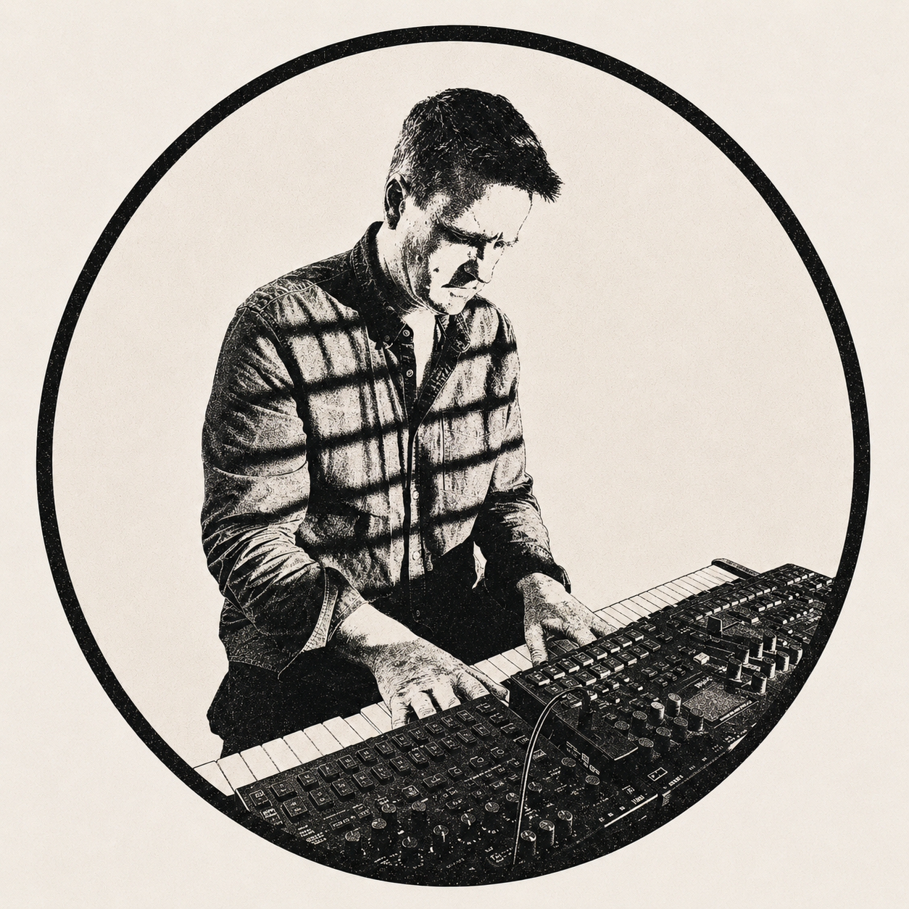

Jamie Gabriel
Improviser · Composer · Researcher · Music Technologist
I am a musician, researcher, and music tech developer living between Newcastle, Australia and Auckland New Zealand.
I have a PhD in computational musicology and am interested in things that range between
music, mathematics and computer science.
I am also in the band SAJA Project
with Sally Jamila
and we have an album due out in mid 2026
More about me

Articles & Transcriptions →
Some music transcriptions, some academic writing, mathematics and code.Teaching Resources →
Resources for students and example solos.Recordings & Live Music →
Details on performances, recordings and set upCurrent Projects
-
Research
Deep Improv: A project that explores ensemble, recording, and AI-Augmented collaboration -
Software
BeatMatrix: iOS app for practising complex and changing time signatures